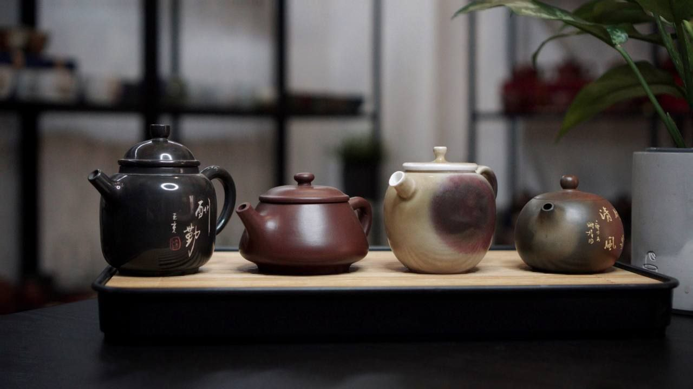
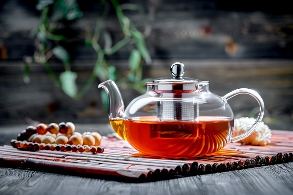
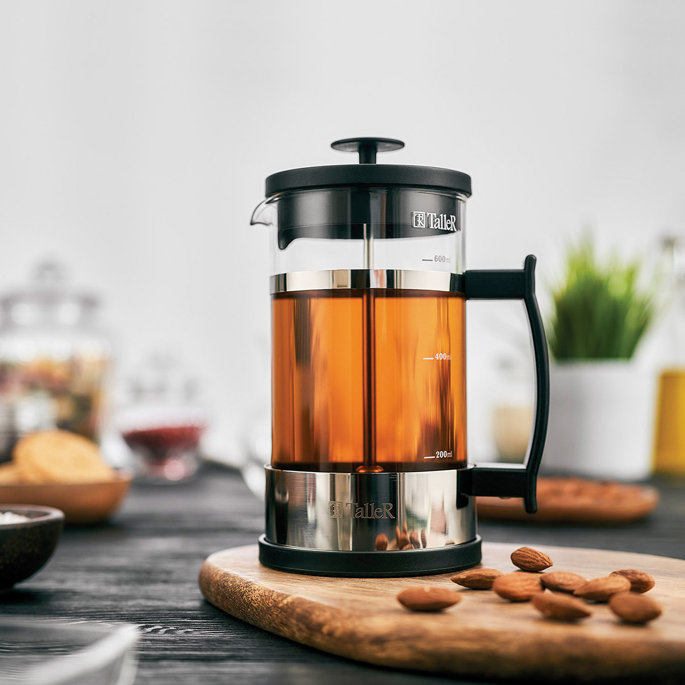

Как заваривать чай правильно в зависимости от вида и сорта
Содержание статьи
Традиции чаепития в разных странах
Великобритания
Каждый день ровно в пять, что бы ни случилось. 5 o’clock tea — это непременно красивая посуда, свежие сливки или молоко, которые наливаются в чашку первыми, а рядом на блюде ждут воздушные пшеничные булочки с маслом и джемом, пирожные, сдобное печенье.
Испания и страны Латинской Америки
Здесь тоже есть послеобеденный ритуал, именуемый merendina, то есть «заслуженная радость». Когда обед давно кончился, ужин и не думал начинаться, а тут как раз и конец рабочего дня (5–6 часов вечера), ничего лучше не придумаешь, как заваривать чай в чайнике и нести на стол домашние сладости.
Турция
Здесь сходят с ума не только по кофе. Ароматный чаек может быть поводом для обсуждения любых бизнес-вопросов, личных дел, семейного совета или встречи старых друзей. Заваривают напиток очень крепко, пьют из маленьких грушевидных стаканчиков — чтобы аромат не улетучился. А заедают божественный отвар орешками и сухофруктами. Вот настоящее турецкое чаепитие!
США
В южных штатах нет нужды в согревающих напитках, зато ледяной чай — любимец населения, практически заменитель лимонада. Заварку остужают, заливают сладким сиропом и лимонным соком, добавляют побольше льда — и напиток готов. Самое оно на пляже Флориды или где-нибудь в Калифорнии.
Марокко
Здесь принято брать листьев и специй в пропорции чуть ли не 50 на 50 — получается очень пряный, плотный напиток. Чтобы сгладить остроту пряностей, в заварник бросают кусочки яблока. А в жаркие дни эту ядреную заварку пьют холодной, добавив изрядную долю апельсинового сока.
Швейцария
Здесь в XIX веке гурманов интересовали формальные стороны дела: сколько времени заваривается чай, какова оптимальная температура заваривания чая. В некоторых клубах по сей день вместе с заваркой подаются кувшинчик с лимонным соком, термометр (проверить, насколько остыл кипяток) и песочные часы (проследить, что прошло ровно две минуты, и можно вынимать заваренные листья из чашки).
Россия
Здесь как-то сразу полюбили пить его сладким и не очень крепким (вероятно, оттого, что колониальные товары до недавнего времени стоили очень дорого, их экономили). Сразу возникает в памяти классическая картина старорусского чаепития — с самоваром, баранками, домашним пирогом и огромной сахарной головой, которую глава семьи колет на кусочки специальным зубилом.
Посуда для заваривания чая
Если вода — чаю мать, то чайник, определенно, отец. Емкость для создания напитка нужно выбирать с умом. Однако споры о том, как правильно заваривать чай — в чайнике, френч-прессе или, может быть, специальной колбе, — давно считают несостоятельными. Важно не то, в чем лучше заваривать чай, а то, как именно вы это делаете и придерживаетесь ли верной технологии.
Как правильно заваривать чай в заварнике?
|  |
Приводим алгоритм для элитного китайского чая — скрученного или
рубленого, но не порошкового и не мелкого. 1. Сначала, согреваем заварник. 2.Листья не промываем: сразу насыпаем из расчета 1 ч.л./чашку. 3. Заливаем и закрываем крышку, бережно взбалтываем и выливаем воду. 4. Ввливаем ту воду, которая станет чаем, из расчета 200 мл/ложку заварки. 5. Ждем 3–5 минут в зависимости от того, какой у вас лист: чем он мельче нарублен, тем быстрее заварится. |
Как заваривать чай в стеклянном чайнике?
|  | Инструкция примерно такая же, как для обычного керамического заварника, но с учетом того, что стекло быстро греется и так же быстро остывает. То есть ополаскиваем емкость изнутри кипятком, делаем первичную заливку, затем либо сливаем (если лист крупный), либо доливаем водой нужной температуры (если у вас мелкие чаинки). |
Как заваривать чай во френч-прессе?
|  |
Этот агрегат отличается от других наличием плунжера — подвижного
металлического поршня, который в нужный момент поможет отделить
заваренные листья от готового отвара. Именно отделить, а не
выжать из нее все соки. 1. Колбу френч-пресса прогреваем, как и обычный заварочный чайник. 2. Засыпав и промыв листья первой водой, заливаем нужное количество слегка остывшего кипятка и закрываем крышкой с плунжером, но не пытаемся давить на поршень: это можно делать только после того, как чаинки улягутся. 3. Через 3–4 минуты после заливки плавно и нежно прессуем листья плунжером. Не нужно сильно давить и отжимать лист — так напиток будет горчить. |
Как заварить чай в термосе?

|
Хитрость заключается в том, что в термосе напиток продолжает
завариваться все время: двойные стенки создают эффект бани,
поэтому если не вынуть вовремя заварку, вы получите очень
крепкое питье. 1. Не прогреваем термос: кипяток и так успеет нагреть стенки, а если мы заранее их изжарим, чаю будет слишком душно. 2. Промываем листья в отдельной посудине, а потом кладем теплыми либо в ситечко, либо в холщовый мешочек. 3. Заливаем, как обычно, но обязательно не наливаем под завязку: немного воздуха должно остаться, чтобы эфирные масла могли высвобождаться. 4. Если вы хотите получить умеренно крепкий напиток, через 7–10 минут выньте заварку. Если хочется покрепче — оставьте настаиваться. |
Правила заваривания чая на каждый сорт
Чёрный
Единственный вид, который можно готовить в кипятке: температура 90–100 градусов ему нипочем. Длительность настаивания зависит от размера чаинок: мелкий и порошковый готов уже через 3 минуты, крупнолистовой можно держать до 8 минут.
Зелёный
Много статей написано о том, как правильно заваривать зеленый чай. Мы только повторим базовые правила: оптимальная температура воды — 80–85 градусов, первая чашка довольно слабая, но можно и даже нужно заварить повторно. Вторая и третья чашки будут по вкусу самыми насыщенными.
Пуэр
Выдержанный, зрелый, дымный, очень крепкий напиток — чаще всего прессованный. Перед тем как заваривать чай пуэр, отложите все дела: приготовление этого отвара — целое искусство. Температура заваривания — около 80 градусов, первый кипяток только «будит» напиток, затем идет вторая экстракция, уже более насыщенная и ароматная. Выпиваем пиалу и тут же очень быстро заливаем повторно. Каждая последующая порция будет крепче и насыщеннее, возможно сделать до семи экстракций.
Улун
Для приготовления этого деликатного, суперполезного напитка нужна вода температурой 85 градусов. Для ориентира: такой отметки жидкость достигает спустя 4–5 минут после кипения. Как обычно, прогреваем керамический или стеклянный заварник, «будим» листья первой порцией горячей воды, через 10 секунд сливаем и готовим напиток. В течение 30 минут после первой экстракции можно заварить заново 3–5 раз. Самые крепкие чашки — вторая и третья, самая ароматная — первая.
Иван-чай
Здесь есть несколько версий: по одной, можно заливать этот травяной напиток кипятком — вкус таким образом только быстрее раскроется. По другой, лучше пожалеть витамины внутри ферментированной травы и заварить негорячей водой, но оставить на 10–12 минут. В обоих случаях не стоит заваривать слишком крепко: пары ложек хватит на две порции.
Гречишный
Говорят, греки называли его турецким зерном. Отвар из гречихи обладает очень насыщенным ароматом и содержит много полезных веществ. Его рекомендуется готовить без промывания в прогретом чайнике. Кипяток должен быть слегка остывший, не выше 90 градусов. Чем дольше гречневый отвар настаивается, тем он крепче, а класть в заварник нужно не больше двух ложечек на стакан воды.
Белый чай
Это самый нежный и деликатный из всех видов наряду с драгоценным желтым китайским. Готовят его из нежных зеленых побегов и почек. Он почти совсем не ферментируется, поэтому цвет заваренного напитка — светло-желтый, а вкус — травяной и одновременно молочный. Существует несколько разных рецептов и лайфхаков, как заваривать белый чай, но все эксперты сходятся на том, что температура заваривания этого ароматного питья должна быть немного ниже, чем для зеленых собратьев. Оптимально — 75 градусов. Сливать первую воду необязательно: высущенные верхние листья и почки в принципе не горчат.
Травяной
С ним нужно быть особенно осторожными — и то, как заваривать травяной чай, зависит не от состава, а от структуры сухой смеси. Хрупкие листья, порошки, мелкая заварка готовится очень быстро, буквально за три минуты. Для более крупного и жесткого листа подойдет 5–6 минут настаивания под крышкой. Ну, а самые крупные листья и цельные ягоды можно даже подержать на щадящей водяной бане до 10 минут. Первую воду сливать не рекомендуется, промывать смесь также необязательно. Температура воды — до 90 градусов. Если хочется сохранить все полезные свойства, достаточно подождать 3 минуты после кипения и после этого заварить напиток.
Каркаде
Красным чаем по-китайски называют некоторые виды черного, а этот ароматный отвар готовят из цветов гибискуса. Так что не очень-то верно говорить, что каркаде — чай. Как заваривать красный настой? Правило номер один — никакой металлической посуды. Правило номер два — не дольше 3–4 минут. Если используете стеклянный френч-пресс, можно интенсивно перемешать заварку прессом, чтобы цвет настоя стал более насыщенным, ярко-красным.
Ройбуш
Это питье на любителя, с выраженным травяным вкусом и запахом. Его, как и черный ферментированный продукт, можно настаивать на чуть остывшем кипятке. Для яркости вкуса рекомендуется добавлять к ройбушу теплые специи: кардамон, гвоздику, корицу, куркуму. Не стоит выдерживать напиток слишком долго — он начнет горчить.
Матча
Церемониальный напиток из порошка чайных листьев. Его даже не заваривают, а взбивают специальной кисточкой, как смузи. Сухой порошок нужно предварительно просеять через сито, чтобы в готовом напитке не оказалось комков. Вливаем в чашку немного горячей воды (не кипятка!) и интенсивно взбиваем венчиком или капучинатором. Сверху образуется пенистый слой, который не должен осесть. Теперь можно добавить вспененного молока или воды и взбить еще разок.
Спасибо, что прочли эту статью!)
"Чай — это приятное без излишества."